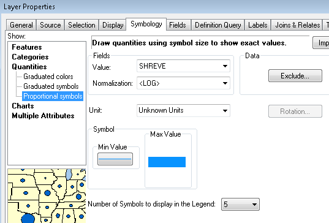

Output¶
The cascade.py library can be used to add 4 new fields to a river segment dataset.
These are as follows:
STRAHLER - field containing the Strahler stream order. A value of 1 indicates a first-order stream. The maximum order in Ireland is 7
SHREVE - field containing the Shreve stream order. These range from 1 to 5482.
PATH_ID - a unique ID for each path - a collection of contiguous segments of the same Strahler order
VISITED - the order the segment was checked by the algorithm within the hydro network (can be ignored)
ArcMap Layer Files¶
Two layer files that can be used in ArcMap are provided here for convenience - layers.zip.
They can also be easily recreated.
For Strahler - simply set the line width to the STRAHLER field.
As Shreve values increase exponentially, a logarithmic value can be used for display. The image below shows how to do this in ArcMap:
When applying the Shreve layer in ArcMap, an error message is incorrectly displayed “Minimum and/or Maximum Data Value <=0”. Clicking past these errors, and then reselecting the Normalization field to “<LOG>” applies the layer correctly.